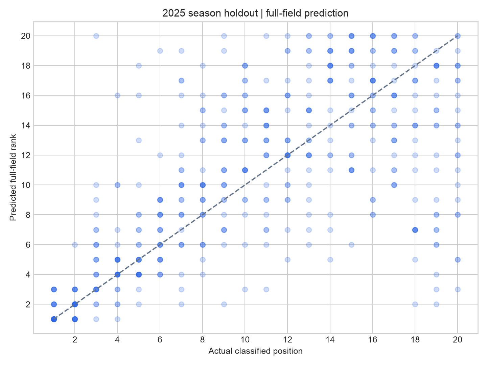
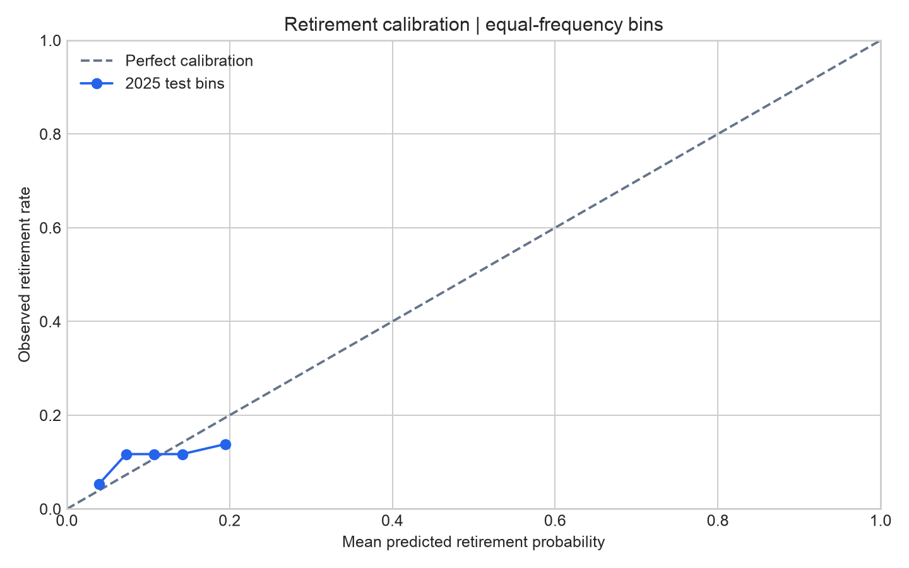
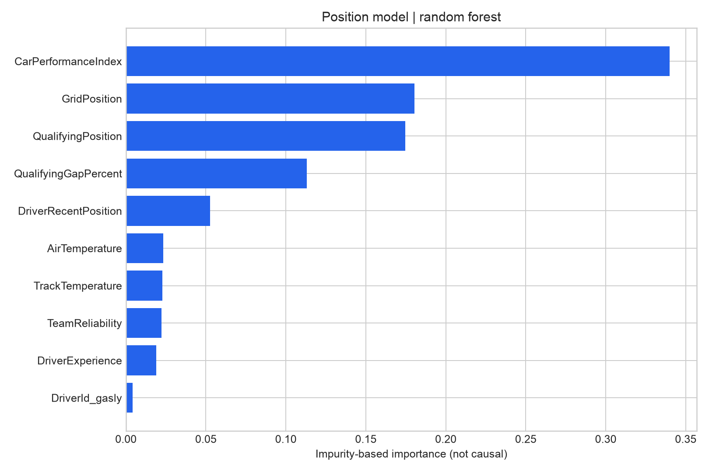
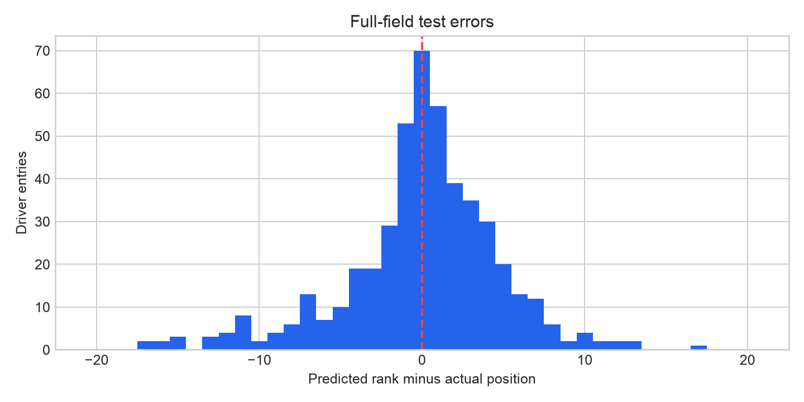

Formula 1.
Before lights out.
Turning race history into forecasts—and checking how useful they are.
I built a Python workflow using 70 Grands Prix to estimate finishing order and retirement risk. The challenge was to use only information available before the race and evaluate the predictions against a simple benchmark.
01 / Project scope
Define the prediction before choosing the model.
I used qualifying results, the confirmed starting grid and previous races to estimate each driver’s finish and chance of retirement. I then converted those estimates into a complete predicted race order.
From prototype to final model
I expanded a single-season prototype into a three-season workflow with separate steps for collecting data, comparing models and generating forecasts.
I saved the data, source information, tests and evaluation outputs so the work could be repeated and checked.
Known before the start
Prediction occurs after qualifying and final grid publication. The inputs exclude the race outcome and information collected during the race.
Live telemetry, strategy optimization, tire degradation, DRS and engine-specific failure physics are outside the completed pre-race scope.
Explore the modeling and evaluation process
02 / Validation design
Test the idea on a later season.
- Collect. FastF1 qualifying and classification data for 2023–2025, with caching, completeness checks and a Jolpica results fallback.
- Engineer. Grid, qualifying position and pace gap, driver/team history, qualifying compound, and surface/air temperatures. Weather is a rainfall proxy, not measured track wetness.
- Select. Fit candidates on 2023; use 2024 finisher MAE for position-model selection and retirement Brier score for classifier selection.
- Evaluate. Refit selected models on 2023–2024 and test on all 24 races of 2025. Fit preprocessing only inside the training partition.
- Deploy. After freezing test results, refit model types on 2023–2025 for future-race predictions. That refit has no independent test score.
How a field becomes an order
The ranking score blends predicted finishing position with retirement probability and the typical classified position of retired drivers in training data. Scores are sorted, with grid position and driver ID breaking ties.
This guarantees a unique 1-to-N order, but remains a ranking heuristic rather than a physical race simulation.
Test evaluation predicts one GP at a time: earlier completed 2025 races update historical features for later ones. The evaluation model weights remain fixed.
| Model | Validation MAE |
|---|---|
| Random Forest | 2.30 |
| Gradient Boosting | 2.42 |
| Linear Regression | 2.65 |
03 / Measured performance
Measure performance against a useful baseline.
I reserved 2025 for the final evaluation after selecting models on earlier seasons. Because I had explored 2025 during prototyping, a new season would provide a stronger independent check.
For drivers who finished, the average prediction error was 2.43 positions. Across the full field it was 3.41 positions, compared with 3.34 for simply using the starting grid. That comparison helped me assess whether added model complexity was useful.
See detailed evaluation, charts and baseline comparisons
Full-field ordering
| Ordering | MAE | MSE | Race Spearman |
|---|---|---|---|
| Combined model | 3.41 | 23.33 | 0.648 |
| Position-only model | 3.40 | 23.34 | 0.647 |
| Starting-grid baseline | 3.34 | 23.09 | 0.651 |
Starting-grid order had slightly lower full-field MAE. The added model complexity did not beat that baseline on this test season.
Winner accuracy: 58.3%. Podium recall: 77.8%. These are retrospective results on 24 races, not future-race guarantees.
Retirement probabilities
| Model | Brier (lower is better) | ROC AUC |
|---|---|---|
| Retirement model | 0.0969 | 0.584 |
| Constant training rate | 0.0968 | 0.500 |
The retirement model narrowly missed the constant-rate baseline on Brier score. Treat its probabilities as exploratory estimates, not reliable warnings about individual drivers.
The classifier is evaluated on 470 eligible starters, including 51 retirements. DNS and disqualifications are excluded from this classifier metric; crashes and mechanical failures are both counted as retirements.




Feature importance and error distribution


Feature importance describes the fitted model, not a causal relationship.
Per-team full-field test error
| Team | MAE | Entries |
|---|---|---|
| Alpine | 3.15 | 48 |
| Aston Martin | 3.68 | 47 |
| Ferrari | 3.40 | 48 |
| Haas F1 Team | 3.77 | 48 |
| Kick Sauber | 4.21 | 48 |
| McLaren | 2.48 | 48 |
| Mercedes | 3.19 | 48 |
| Racing Bulls | 3.54 | 48 |
| Red Bull Racing | 2.73 | 48 |
| Williams | 3.98 | 48 |
04 / Inspect the forecasts
One race, every driver.
Choose a 2025 race to compare the model’s predicted order with the actual result. These are historical test predictions.
Loading the published test predictions.
| Predicted | Driver | Team | Actual | Retirement risk | Outcome |
|---|
05 / Engineering conclusions
What I built and how I evaluated it.
Engineering accomplishments
I built a repeatable data-to-prediction workflow, checked source completeness and kept future race outcomes out of the inputs. I also created the interactive explorer below the results so individual forecasts can be inspected.
The model can prepare upcoming-race inputs without touching current-race outcomes, and its deployment bundle can generate both probabilities and a unique order.
What the comparison taught me
The starting grid remained a strong benchmark. I used that result to identify where more evidence was needed before adding further model complexity.
Future regulation changes, qualifying weather, rare failures and unmodeled DNS/DSQ outcomes limit transferability. The next research step would require a new evaluation period.
06 / Reproduce or predict
Run the complete pre-race pipeline.
The repository contains the data, source code, tests, setup guide and exact measured outputs. Training regenerates both the frozen evaluation bundle and the later deployment bundle.
Run the project locally
python -m pip install -r requirements.txt
python final_pipeline.py train
python -m pytest -qUse the README's prepare and predict commands for a future race after qualifying and confirmed grid publication. Only load model files you trust.
Data: FastF1 and Jolpica. Season datasets and provenance. Independent educational project; not affiliated with Formula 1.